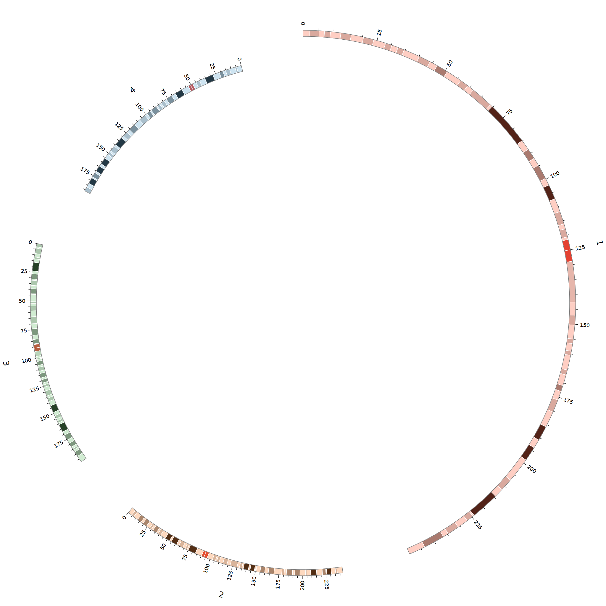
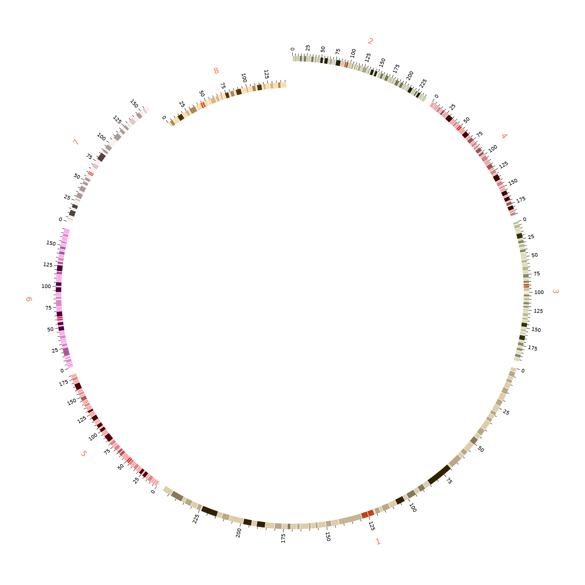
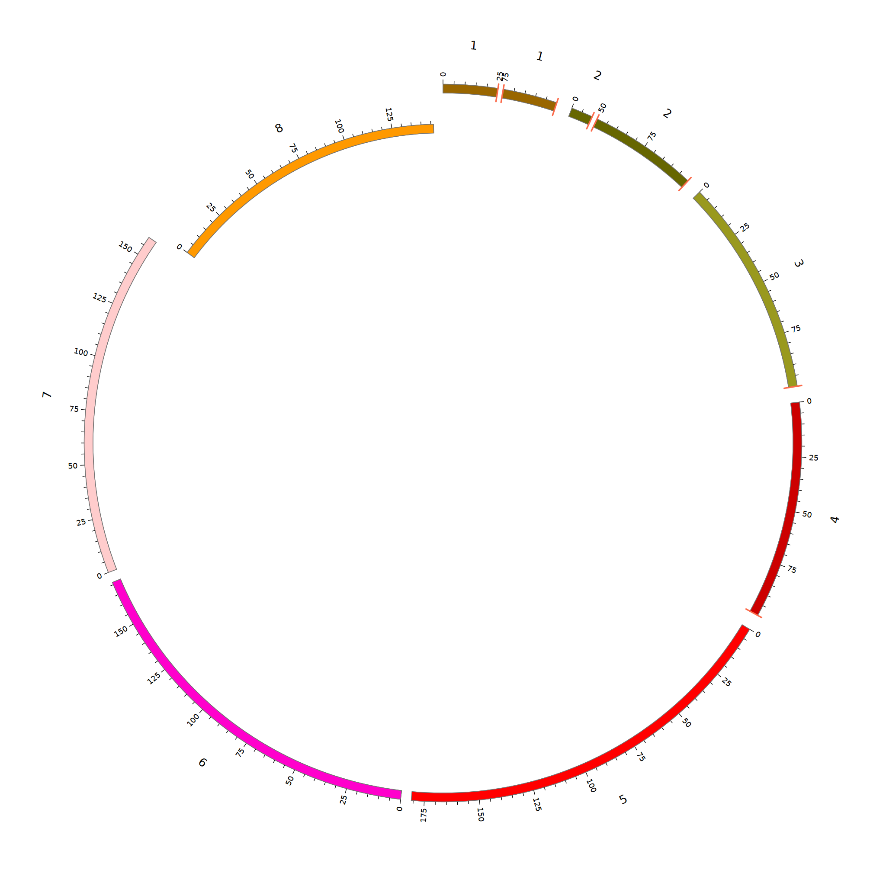

ideogram有着不同的意义；chromosomes是karyotype文件中的染色体；而ideogram则是展示染色体的一部分区域，或者完整的一条染色体
- 它是circos图片中的轴
- 在生物学的内容上可以是染色体chromosomes、 拼装的contig序列或者是clone片
- 在karyotype的数据文件中，定义了每个轴，它们有不同的id、不同的名字label;有着大小([0-100000])和颜色属性
它主要的格式例如
chr - ID LABEL START END COLOR
前面两个字段chr和-总是固定的，
id字段是用来表明这个chr的身份的
label字段则是用来在图片上进行表示的文字信息
start和end在keryotype中尽量覆盖全长，而在其他的conf文件中来控制它的画出来的长度
除了chromosomes的数据类型还存在着band类型
band hs1 p36.33 p36.33 0 2300000 gneg
band hs1 p36.32 p36.32 2300000 5300000 gpos25
band hs1 p36.31 p36.31 5300000 7100000 gneg
...
band hs2 p25.3 p25.3 0 4300000 gneg
band hs2 p25.2 p25.2 4300000 7000000 gpos50
band hs2 p25.1 p25.1 7000000 12800000 gneg
与chromosomes的数据定义类似，只不过前两列是band和对应的父染色体的id名
接着就是band的id编号与label名称，以及坐标和颜色信息
当然Circos官网还给出了许多可以参考的图片，用到你的数据中
published examples from the literature
直接看一下band的具体效果是什么样子吧！

<ideogram>
<spacing>
default=0.05r
<spacing>
radius=0.9r
thickness=30p
fill=yes
stroke_color=dgrey
stroke_thickness=2p
show_label=yes
label_font=default
label_radius=1.1r
label_size=30
label_parallel=yes
show_bands=yes
fill_bands=yes
band_stroke_thickness=2p
band_stroke_color=white
band_transparency=4
<ideogram>
关于染色体的过滤选项filtering
主要使用到chromosomes和chromosomes_display_default两个参数
当chromosomes_display_default=yes的时候，默认是展示karyotype中的所有染色体
当为no的时候，就可以结合chromosomes参数自定义选择要展示染色体
下面是几种常见的过滤方式
chromosomes_display_default=no
chromosomes=/hs[1-4]$/
使用-号排除不需要展示的ideogram
chromosomes=-hs1;-hs2;-hs3;
chromosomes_display_default=yes
修改ideogram的出现顺序
- 直接指定绝对的顺序，也就是把所有的ideogram都排好序，写上
- 相对顺序，只指定单个锚，然后调整其他ideogram的顺序
绝对顺序的就不做延伸了，来了解一下相对顺序吧
chromosomes = hs1;hs2;hs3;hs4;hs5;hs6;hs7;hs8
chromosomes_order = hs5,hs4
这种将会展示的顺序为1、2、3、6、5、4、7、8
这是因为hs5作为锚固定在整个字符的第5位，而要让hs4在其后则需要交换hs4和hs6的位置
chromosomes_order = hs3,-,hs2
这种将会展示的顺序为4、5、3、1、2、6、7、8
同样hs3固定在第3号位置
这个的实现原理则是先把3和2确定后在填充-符，并且一次从hs3前填充两个字符，剩下的都填写到hs2后面
另一种类似于正则表达式
chromosomes_order = ^,hs5
显示的顺序为5,1,2,3,4,6，7,8
chromosomes_order = hs5,$
显示顺序为1,2,3,4,6，7,8，5
具体的的顺序实现效果

chromosomes_radius=/hs[1-7]$/:0.9r,hs8:0.8r
chromosomes_scale=hs1=0.3r,/hs[2-8]$/=0.7rn
chromosomes_order=hs3,-,hs5
果然顺序是顺时针的2、4、3、1、5、6、7、8
对ideogram进行修剪
主要使用chromosomes=hs1:0-100
和chromosomes_breaks=-hs1:25-75;hs2:25-75;
接下来主要就是关于break这条线的修饰
它会放在ideogram的spacing标签内，做为一类分割线
效果图：

#用于修剪 ideogram
chromosomes=hs1:0-100;hs2:0-100;hs3:0-100;hs4:0-100;hs5;hs6;hs7;hs8
chromosomes_breaks=-hs1:25-75;-hs2:10-50;
<spacing>default=0.005r
break=0.5r
axis_break_at_edge=yes
axis_break=yes
axis_break_style=2
<break_style 2>stroke_color=red
stroke_thickness=5p
thickness=2r
<break>
<spacing>
这里的axis_break和axis_break_at_edge参数是控制分割线的显示
axis_break_at_edge当染色体不是从karyotype中它的开始到结束时，就会加上分割线
break控制裂缝的宽度
而具体到每个线的设计，又在break_style标签里使用thickness控制长度
stroke_thickness控制线的厚度，